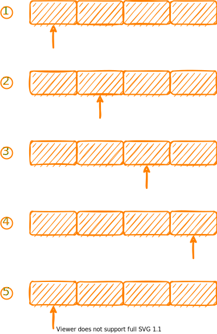

负载均衡
背景
在实际生产过程中，我们往往会通过集群的方式部署服务器，而不是单机部署，从而可以提高服务的并发能力。
但是这样部署产生了一个新的问题：如何决定某个请求发往的服务器？这就是负载均衡算法所需要解决的问题。
算法
目前比较常见的负载均衡算法有：
- 轮询法 (Round Robin)
- 随机法 (Random)
- 权重轮询
- 权重随机
- 哈希法
- 最小响应时间
- 最小连接
下面一一进行介绍
注意：为了简单，下面的代码未考虑并发，仅提供算法思路
轮询法
轮询法属于最简单的负载均衡策略之一，它的意思是说，这一次请求选择的是 A 服务器，那么下一次请求我们就选择 A 后面的服务器，依次类推，到达最后一个位置之后，重新选择第一个服务器。
1 | func RoundRobin(servers []string) func() string { |
随机法
通过生成随机数，从而选择对应的服务器，算法十分简单
1 | func init(){ |
权重轮询
在部署服务的时候，有些服务器可能性能好一点，有些服务器呢，性能差一点，这样的话，如果所有服务器平摊全部请求，肯定不好，那么我们可以给每一个服务器设置一个权重，权重越大，表示性能越好，可以接受更多的服务。比如说现在有两台服务器，A 服务器权重为 3，B 服务器权重为 1，那么平均下来，A 服务器应该接受 3/4 的请求，而B服务器接受 1/4 的请求。
一种很简单的思路就是将所有的服务器按照权重平铺延展，类似下图，然后使用轮询的方式
1 | type Server struct { |
但是这种算法有所缺陷，那就是不平滑，在一个时间段中可能只有 A 服务器在用，但是 B 服务器可能都没有接收到任何请求，针对这种情况，出现了一种比较平滑的算法，nginx 中的权重轮询就是该类。该算法的思想是：
- 服务器的初始权重(
current)为0，有效权重(effective)为设置的权重值，计算所有的权重和为total - 每一轮选择中，将当前的权重+有效权重，current 最大的为本次选中的服务器
- 选中该服务器之后，
current需要减去total - 进行下一轮
下面是权重为 3 的服务器 A 和权重为 1 的服务器 B 执行该算法的一整轮过程
| 请求次数 | current | 添加 effective 后 | total | 选中 | 选中后 current |
|---|---|---|---|---|---|
| 1 | [0, 0] | [3, 1] | 4 | A | [-1, 1] |
| 2 | [-1, 1] | [2, 2] | 4 | A | [-2, 2] |
| 3 | [-2, 2] | [1, 3] | 4 | B | [1, -1] |
| 4 | [1, -1] | [4, 0] | 4 | A | [0, 0] |
代码实现如下：
1 | func SmoothWeightRoundRobin(servers []Server) func() string { |
权重随机
权重随机可以类比权重轮询的第一种实现方式，下面直接给出代码
1 | func WeigthRandom(servers []Server) func() string { |
除此之外还可以使用前缀和的思路，将所有的权重构成一个前缀和数组，比如说权重为[1, 2,3] 的时候，可以形成 [0, 1, 3, 6]，轮询的时候随机生成一个索引([0,6)之间)，然后到数组中查找对应的范围，比如随机出 5，首先 +1，属于 (3, 6]，所以应该返回最后一个节点，也就是说返回大于等于 随机数+1 的前缀和数组值对应的节点，具体的算法实现见 GitHub[^1]
哈希法
我们可以对请求中的某个特定属性计算哈希值，然后根据哈希值寻找对应的服务器节点。
1 | func HashLoadBalance(servers []string) func(key string) string { |
也可以使用一致性哈希算法
最小响应时间
负载均衡器需要统计服务端响应的时间，然后选择平均响应时间最小的服务器。
1 | // 响应时间统计 |
最小连接数
和最小响应时间类似，需要负载均衡器维护每一个服务器的连接，然后选择连接数量最少的服务器。
总结
负载均衡算法是集群部署时常用的算法，合理的负载均衡算法能够更好程度的利用我们的服务器资源，提高系统的承受能力，具体的算法需要根据我们的需求进行选择，比如提供 WebSocket 服务的时候，应该使用 哈希法，根据客户端的 IP 地址计算访问的服务端，从而保证先后访问的服务端都是同一个服务端。
实现代码参见 GitHub
生活杂笔，学习杂记，偶尔随便写写东西。